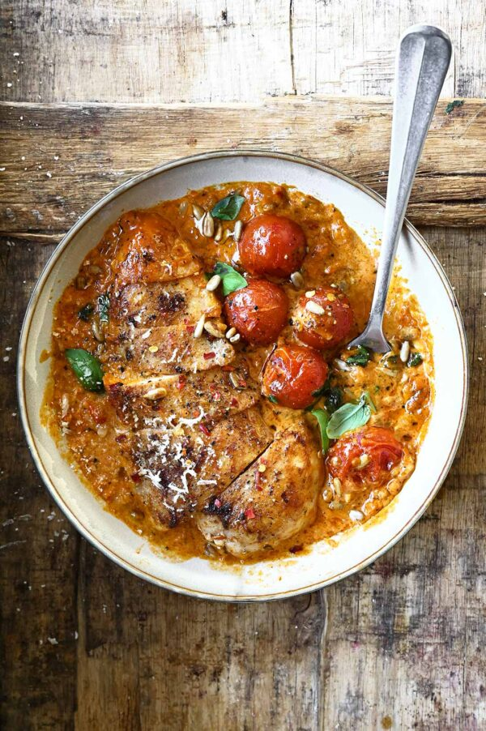

Creamy Red Pesto Chicken

Description
Ingredients
- 2 chicken breast fillets
- 50 g/9 oz cherry tomatoes
- tbsp unsalted butter
- tbsp oil from sun-dried tomatoes
- garlic cloves, minced
- small onion, finely chopped
- alt + black pepper
- pinch of sweet paprika
- tsp red pepper flakes
- tbsp tomato paste
- /2 cup/125 ml cream with 20% fat, or half-and-half
- /2 cup/125 ml chicken broth
- 0 basil leaves
- rated Parmesan, for serving (optional)
- toasted sunflower seeds, for serving
- jar of pesto sauce
Steps
- Season the chicken fillets all over with sweet paprika powder, salt and pepper.Heat the oil and butter in a non-stick frying pan over medium heat. Add the chicken and cook, for 5-8 minutes per side or until fully cooked and browned on both sides. Remove from skillet and place on a plate. Cover with foil.
- In the same skillet, add onion and garlic, cook until softened over low heat, about 2 minutes. Deglaze with 2 tbsp water. Add cherry tomatoes, cook for about 2 minutes or until the tomatoes start to burst. Press on the back of the tomatoes with a fork to release their juices and stir to combine.
- Stir in tomato paste, season with salt, pepper and red pepper flakes. Pour chicken broth and bring to a simmer. Stir in red pesto. Then add cream, stir to combine.
- Add chicken back into the skillet. Allow to cook for 5 more minutes or until the chicken is cooked through and the sauce is slightly thickened.
- Stir in basil leaves and top with toasted sunflower seeds. Sprinkle with some red pepper flakes and grated Parmesan. Enjoy!